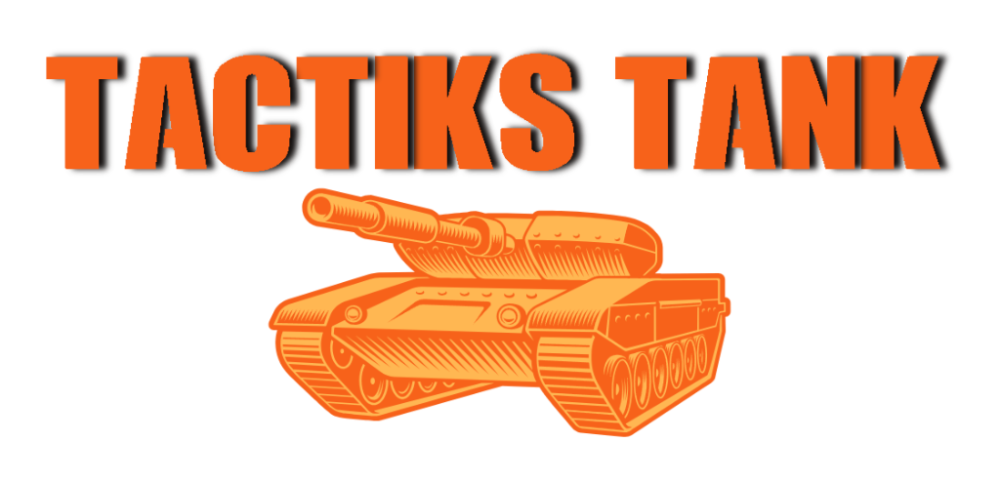

BIENVENUE SUR LE SITE DE

Petite présentation :
Bonjour nous sommes Raphael et Melvin deux élèves de premières et nous faisons ce site pour présenter notre projet de Nsi.
Nous devions réaliser un jeu en utilisant le principe de grille. Nous devions alors programmer le jeu en Python en s'aidant de la librairie pygame, mais égalment d'autres librairies trouvées sur internet.
Nous avons eu l'idée de faire un jeu de tank en 1vs1.
Chaque joueur peux choisi la couleur de son tank et chaque partie est diffèrente car les maps sont générés de façon aléatoire.
© ROUSEAU Melvin et CHAPRON Raphaël - Toute reproduction interdite